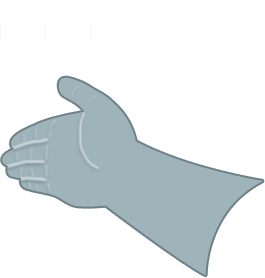
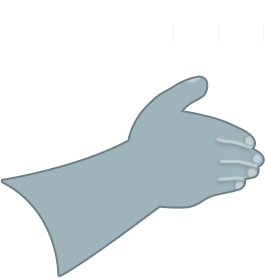

Speak your destination to begin
Go ahead, I'm listening!
I heard
""
Is this correct?


Calculating route...

Go Back in Route

Zoom In/Out

Jump Ahead in Route
Swipe Left to Continue
(may need to click on view once for these to work)
T - Forward
G - Backward
F - Left
H - Right
I - Tilt Up
K - Tilt Down
J - Rotate Left
L - Rotate Right
Z - Previous Step in Route
X - Next Step in Route
SPACE - Start/Stop Driving
=> - Pick a new destination
T - Forward
G - Backward
F - Left
H - Right
I - Tilt Up
K - Tilt Down
J - Rotate Left
L - Rotate Right
Z - Previous Step in Route
X - Next Step in Route
SPACE - Start/Stop Driving
=> - Pick a new destination
Go Back in Route
Jump Ahead in Route
Zoom In/Out